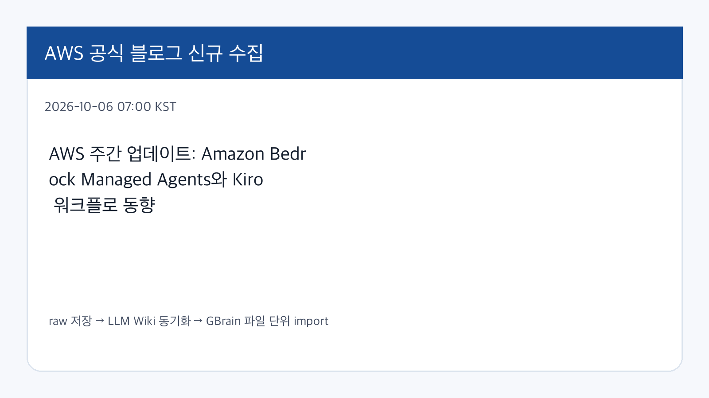
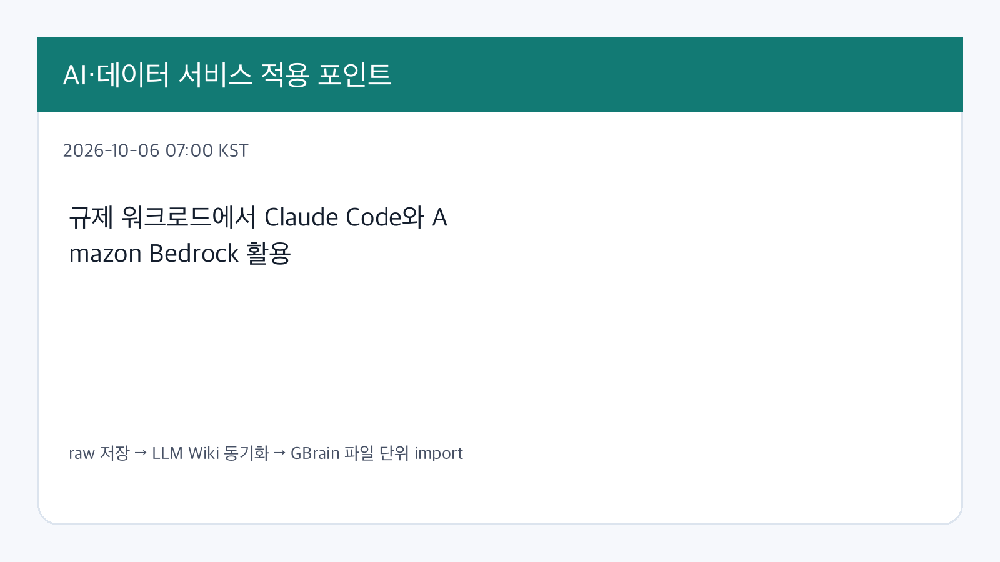
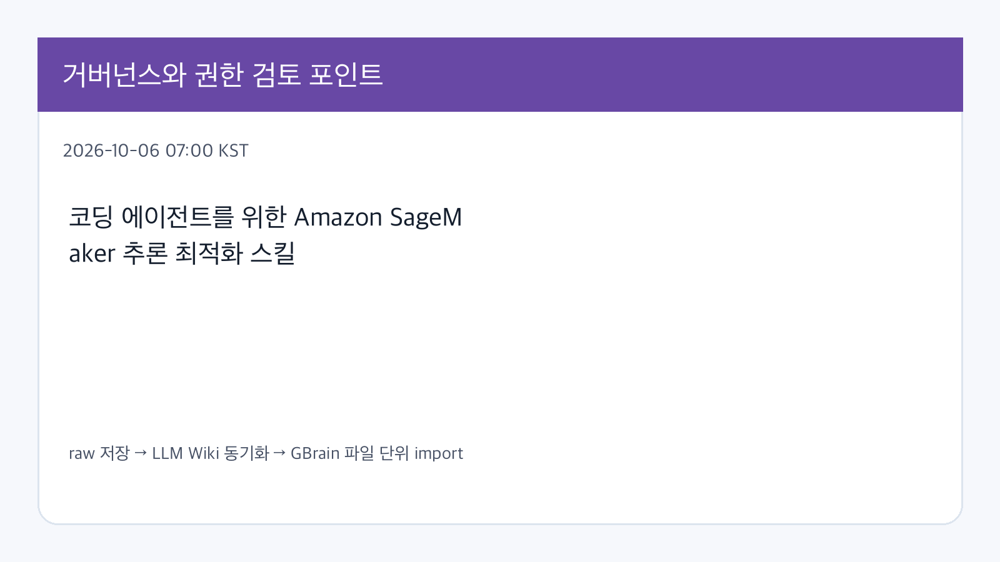

AWS 주간 업데이트: Amazon Bedrock Managed Agents와 Kiro 워크플로 동향
AWS 주간 업데이트는 Amazon Bedrock Managed Agents powered by OpenAI 공개 프리뷰, 분기별 서비스 가용성 업데이트, Kiro workflows를 함께 다룹니다.
원문 보기2026-10-06 07:00 KST · 신규 수집 데이터 기반
AWS Korea Tech Blog, AWS News Blog, AWS Machine Learning Blog 공식 RSS를 기준으로 수집·저장·동기화한 뒤 기업 기술 의사결정 관점에서 정리했습니다.
AWS 주간 업데이트는 Amazon Bedrock Managed Agents powered by OpenAI 공개 프리뷰, 분기별 서비스 가용성 업데이트, Kiro workflows를 함께 다룹니다.
원문 보기AWS GovCloud(US) 리전에서 Claude Opus 5.5와 Claude Sonnet 5.5를 Amazon Bedrock 및 Claude Code와 함께 규제 워크로드에 활용하는 접근을 설명합니다.
원문 보기Agent Toolkit for AWS의 aws-ai-ml skill을 통해 Kiro, Claude Code, Codex 같은 코딩 에이전트가 SageMaker 추론 최적화·벤치마킹 코드를 생성하도록 돕는 내용입니다.
원문 보기Amazon Quick의 agents, action connectors, knowledge bases, flows, spaces를 개발 계정에서 운영 계정으로 감사 가능하게 승격하는 자동화 패턴을 설명합니다.
원문 보기LangChain과 Amazon Bedrock Managed Knowledge Base로 RAG 애플리케이션을 구성하고, 단일 검색과 에이전트형 검색의 비용·trace 차이를 비교하는 내용입니다.
원문 보기Amazon Quick에서 Admin 또는 Author 사용자를 Reader로 낮추는 수동 재생성 방식과 AWS CLI 기반 단계적 다운그레이드 절차를 설명합니다.
원문 보기Strands 기반 멀티 에이전트 의사결정 시스템을 Amazon Bedrock AgentCore Evaluations로 설명가능성·유용성 관점에서 평가하는 방법을 다룹니다.
원문 보기이번 브리핑은 공식 게시물의 발행 사실과 저장된 원문을 기준으로 작성했습니다. 서비스 변경, 리전·권한·비용·데이터 통제 영향은 실제 적용 전에 원문 문서와 계정별 제약을 추가 검증해야 합니다.
| 기사 | 게시 | 카테고리 |
|---|---|---|
| AWS 주간 업데이트: Amazon Bedrock Managed Agents와 Kiro 워크플로 동향 | 2026-10-06 | News |
| 규제 워크로드에서 Claude Code와 Amazon Bedrock 활용 | 2026-10-06 | AI/ML |
| 코딩 에이전트를 위한 Amazon SageMaker 추론 최적화 스킬 | 2026-10-06 | AI/ML |
| Amazon Quick 리소스의 감사 가능한 계정 간 승격 자동화 | 2026-10-06 | AI/ML |
| LangChain과 Amazon Bedrock Knowledge Bases 기반 에이전트형 검색 | 2026-10-06 | AI/ML |
| Amazon Quick 사용자 역할 다운그레이드 절차 | 2026-10-06 | AI/ML |
| Amazon Bedrock AgentCore 기반 멀티 에이전트 평가 | 2026-10-06 | AI/ML |


